Kussens — Discus
Discus: één contourkussen, drie hardheden.
Discus is er in drie hardheden — soepel, medium en stevig — zodat je de ligsensatie kunt afstemmen op je lichaamsgewicht en slaapvoorkeur.
01 — Discus Soepel
Zachte ligsensatie in 100% natuurlatex.
Discus Soepel is de zachtste hardheid binnen de Discus-lijn: het contourkussen in 100% natuurlatex zakt iets dieper in voor een zachtere ligsensatie, terwijl het veerkrachtig genoeg blijft om niet blijvend in te zakken.
- 100% natuurlatex
- Hardheid: soepel
- Contourmodel
- Afneembare, wasbare hoes
- Veerkrachtig, zakt niet blijvend in
Goed om te weten: een soepele hardheid past goed bij een lager lichaamsgewicht of bij wie simpelweg een zachtere ligsensatie prefereert.

Discus Soepel02 — Discus Medium
Gebalanceerde ondersteuning, de meest gekozen hardheid.
Discus Medium biedt een gebalanceerde ondersteuning die bij de meeste lichaamsbouwen en slaaphoudingen past, en is de meest gekozen hardheid binnen de Discus-lijn.
- 100% natuurlatex
- Hardheid: medium
- Contourmodel
- Afneembare, wasbare hoes
- Veerkrachtig, zakt niet blijvend in
Goed om te weten: twijfel je over de juiste hardheid? Medium is een veilige middenkeuze binnen de Discus-lijn.
03 — Discus Stevig
Steviger opvulling, minder inzakking.
Discus Stevig zakt minder ver in en biedt daardoor meer opvulling — geschikt voor zijslapers met bredere schouders of wie een steviger draagvlak prefereert.
- 100% natuurlatex
- Hardheid: stevig
- Contourmodel
- Afneembare, wasbare hoes
- Veerkrachtig, zakt niet blijvend in
Goed om te weten: een stevigere hardheid geeft zijslapers met bredere schouders vaak meer opvulling tussen hoofd en matras.
Combineer je Discus met de rest van de collectie
Bekijk ook onze andere kussenmodellen, boxsprings, matrassen, topmatrassen en gestoffeerde ledikanten.
Bekijk alle kussens